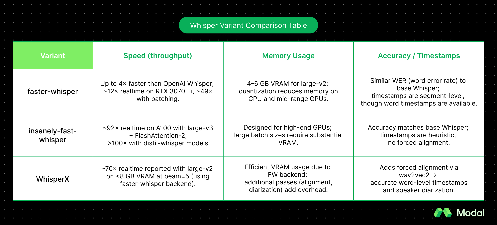
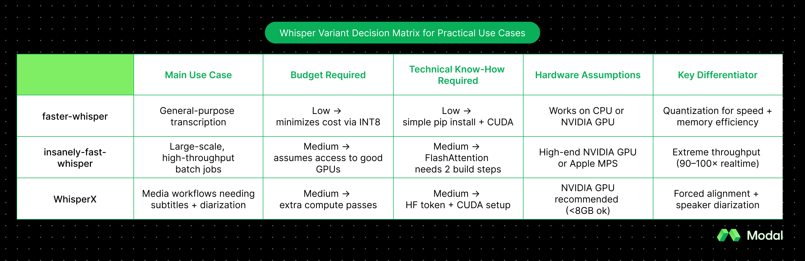

Choosing between Whisper variants: faster-whisper, insanely-fast-whisper, WhisperX
OpenAI’s Whisper, launched in 2022, quickly became the go-to open-source speech recognition model. It’s multilingual, surprisingly robust to noisy audio, and overall decently accurate.
However, users noted a crucial issue: latency. Running Whisper in production worked, but it was slow and had a lot of memory overhead. So, the open-source community stepped in and released faster, leaner, and feature-rich variants. The three that come up again and again are faster-whisper, insanely-fast-whisper, and WhisperX.
What are faster‑whisper, insanely‑fast‑whisper, and WhisperX?
What is faster-whisper?
faster-whisper is a re-implementation of Whisper built on CTranslate2, an optimized C++ inference engine originally designed for translation models. Faster-whisper focuses on efficiency: it supports quantization, which cuts down memory use to speed up inference.
What is insanely-fast-whisper?
insanely-fast-whisper was released in 2023 and focused on speed. It’s a CLI tool built on Hugging Face Transformers, but restructures attention layers so GPUs can handle bigger chunks of data at once. The result is—truly—insanely fast throughput.
What is WhisperX?
Instead of chasing raw speed, WhisperX extends Whisper into a more complete transcription pipeline. These additions make WhisperX the go-to choice for transcriptions where word-level timestamps and speaker labels (i.e. diarization) really matter.
How do they differ technically under the hood?
At their core, all three variants—faster-whisper, insanely-fast-whisper, and WhisperX—are running with the same engine: OpenAI’s original Whisper model weights.
That means if you feed them the same audio and keep decoding settings (i.e. beam size: how many candidate transcriptions the model explores at once, or temperature: a parameter to control randomness) the same, you’ll get about the same accuracy. The key differences show up in how they run Whisper, which affects speed, memory use, and what extra features you get.
faster-whisper is fast
faster-whisper swaps out Whisper’s original PyTorch runtime for CTranslate2, a C++ engine designed to run transformer models fast. One trick used here is quantization—running math in lower precision like INT8 (8-bit integers) or FP16 (16-bit floats) instead of full 32-bit floats. Lower precision means less memory and faster throughput. This implementation also avoids some Python overhead, making it easier to port over to production setups without surprises.
insanely-fast-whisper is, to little surprise, very fast
insanely-fast-whisper adds some hacks for speed: BetterTransformer (an optimized transformer runtime) and FlashAttention-2 (a reworked attention algorithm that reduces memory usage and speeds up training/inference). At a high level, these tools maximize the throughput of your GPU by restructuring math operations. Rather than relying on quantization, it instead bets on GPU parallelism—processing big batches of audio all at once.
WhisperX expands Whisper
WhisperX turns Whisper into a full pipeline, rather than just focusing on speed. It actually calls faster-whisper under the hood for transcription, then adds layers on top: voice activity detection (VAD) to break up audio properly, forced alignment (using wav2vec2) to get precise word-level timestamps, and optional speaker diarization (precise speaker labels) with pyannote-audio. This tells you exactly who is speaking and exactly when they said it. However, these added features mean WhisperX runs more than one model per audio file, so it is heavier than the other two variants. But for applications such as subtitles, meeting transcripts, or interviews, where timing and speaker labels matter, the trade-off may be worth it.
Speed, memory, and accuracy across Whisper variants
Even though faster-whisper, insanely-fast-whisper, and WhisperX all rely on the same Whisper model weights, they don’t behave the same after they’ve been deployed.
Each variant optimizes something different: faster-whisper makes Whisper efficient enough to run on CPUs and modest GPUs, insanely-fast-whisper pushes throughput to the max on high-end GPUs, and WhisperX trades some raw speed for accuracy features like alignment (precise word timing) and diarization (who spoke when).
Here’s a quick summary of how they compare:

Production considerations: setup, cost, pitfalls
To get a Whisper variant up and running in production, there are a few additional considerations beyond the model itself. The overhead—GPU/CPU support, library versions, and compute cost—all play a role when deciding which variant is best for you.
All three variants aim to make life easier, but each comes with its own quirks. The general trade-offs look like this: faster-whisper is the most portable, insanely-fast-whisper assumes you’ve got serious GPUs, and WhisperX brings extra features like diarization (who spoke when) and alignment (word-level timestamps) while sacrificing some speed.
How do you install faster-whisper?
faster-whisper is the easiest to set up. Run pip install faster-whisper, and you’ll be good to go! If you’re using a GPU, you’ll need CUDA 12 and cuDNN 9 (NVIDIA’s driver + deep learning library). On CPUs, you can flip on quantization (lower-precision math, e.g., INT8) to cut costs and memory use. The most common complaint is CUDA/cuDNN mismatches, so it’s worth locking your environment early.
How do you install insanely-fast-whisper?
insanely-fast-whisper is installed as a CLI with pipx. It runs on both CUDA GPUs and Apple’s Metal Performance Shaders (MPS) for Macs. To hit its benchmark speeds, you’ll need to enable FlashAttention-2, which means compiling extra libraries and having a GPU with plenty of VRAM. It’s fantastic for large-scale batch transcription jobs, but overkill (and pricey) if you’re on smaller hardware. Engineers often run into dependency conflicts when mixing FlashAttention with different CUDA/driver versions, so keep this in mind.
How do you install WhisperX?
WhisperX: A pip install whisperx gets you started with basic functionality, but if you want diarization, you’ll need to accept the pyannote-audio license and add a Hugging Face token before use. Under the hood, WhisperX actually calls faster-whisper for the main transcription, so you inherit the same CUDA/cuDNN requirements. The catch is that alignment and diarization add extra processing steps, which makes it heavier than the other two.
In summary: which one should you choose?
Choosing among these Whisper variants depends less on accuracy (which is broadly the same) and more on speed, resource availability, and feature needs.
Faster-whisper is the safest default for most engineers, insanely-fast-whisper delivers maximum throughput if you have the hardware, and WhisperX is the only option if you want word-level timestamps or diarization built-in.
The table below summarizes the trade-offs:

Looking to run one of these variants on a GPU? Modal makes it easy for developers to deploy any open-source model on NVIDIA GPUs. No waiting for GPU availability or configuring complex clusters. Try it today with our Whisper deployment tutorial.